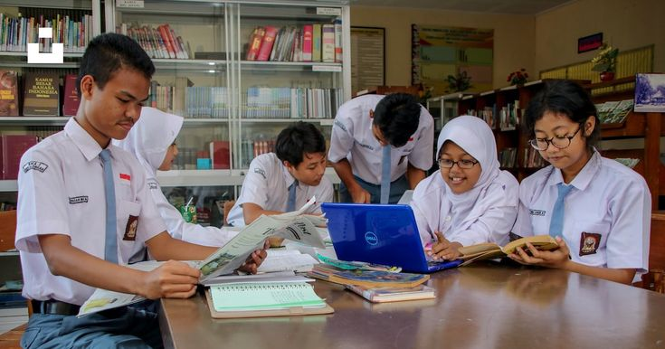

Periodesasi Pemberlakuan UUD di Indonesia
Menelusuri perjalanan konstitusi Indonesia dari masa kemerdekaan hingga UUD NRI Tahun 1945.
UUD dalam Kehidupan Kita
Klik gambar yang menurut kalian memiliki hubungan dengan konstitusi.

📚 Belajar
Apa kaitannya dengan hak warga negara?

🗳️ Pemilihan OSIS
Apa kaitannya dengan demokrasi?

💬 Menyampaikan Pendapat
Apa kaitannya dengan hak warga negara?
🤝 Keberagaman
Bagaimana konstitusi menjadi dasar kehidupan bernegara?
Apakah Konstitusi Indonesia Selalu Sama?
Apakah konstitusi yang berlaku di Indonesia selalu sama sejak Indonesia merdeka?
Jika pernah berubah, kapan perubahan itu terjadi dan mengapa Indonesia mengalami pergantian konstitusi?
Setelah Pembelajaran, Saya Dapat...
Memahami
Menjelaskan pengertian periodesasi pemberlakuan UUD.
Mengidentifikasi
Menyebutkan konstitusi yang berlaku pada setiap periode.
Menguraikan
Menjelaskan urutan periodesasi pemberlakuan UUD di Indonesia.
Menghubungkan
Menghubungkan perubahan konstitusi dengan dinamika ketatanegaraan.
Saya mampu menjawab tiga pertanyaan: UUD apa yang berlaku? Kapan berlaku? dan Mengapa terjadi perubahan?
Apa Itu Periodesasi?
📌 Periodesasi
Pembagian suatu perjalanan sejarah ke dalam beberapa periode berdasarkan peristiwa atau karakteristik tertentu.
📜 Periodesasi Pemberlakuan UUD
Pembagian perjalanan ketatanegaraan Indonesia berdasarkan konstitusi yang berlaku pada periode tertentu.
Timeline Periodesasi Konstitusi Indonesia
Klik setiap periode untuk membuka penjelasan.
27 Desember 1949
17 Agustus 1950
5 Juli 1959
1999
Empat Periode Penting
UUD 1945
18 Agustus 1945 – 27 Desember 1949- Disahkan PPKI pada 18 Agustus 1945.
- Menjadi konstitusi negara setelah kemerdekaan.
Konstitusi RIS 1949
27 Desember 1949 – 17 Agustus 1950- Indonesia berbentuk Republik Indonesia Serikat.
- Berlaku setelah penyerahan kedaulatan.
UUDS 1950
17 Agustus 1950 – 5 Juli 1959- Indonesia kembali menjadi negara kesatuan.
- Menggunakan UUD Sementara Tahun 1950.
Kembali ke UUD 1945
5 Juli 1959 – sekarang- UUD 1945 diberlakukan kembali melalui Dekret Presiden 5 Juli 1959.
- Mengalami empat kali perubahan pada 1999–2002.
🧩 Susun Perjalanannya!
Klik kartu sesuai urutan yang benar. Jika salah, ulangi dari awal.
Pilih urutan:
Urutan pilihanmu:
Mengapa Konstitusi Mengalami Perubahan?
Klik faktor berikut untuk melihat kaitannya dengan perjalanan konstitusi Indonesia.
Bentuk Negara
Perubahan bentuk negara dapat memengaruhi konstitusi yang berlaku.
Sistem Pemerintahan
Perubahan penyelenggaraan pemerintahan berkaitan dengan ketentuan konstitusional.
Dinamika Politik
Perkembangan politik nasional menjadi bagian dari perjalanan ketatanegaraan.
Kebutuhan Ketatanegaraan
Perubahan konstitusi dapat dilakukan melalui mekanisme yang ditentukan dalam konstitusi.
💡 Tantangan Analisis
Bayangkan Indonesia tidak pernah mengalami perubahan konstitusi sejak 1945.
Menurut kalian, apakah dinamika kehidupan ketatanegaraan Indonesia akan tetap sama? Jelaskan alasanmu.
🇮🇩 Perjalanan yang Kita Temukan
📌 Kesimpulan
Periodesasi pemberlakuan UUD menunjukkan dinamika perjalanan ketatanegaraan Indonesia. Indonesia pernah menggunakan UUD 1945, Konstitusi RIS 1949, dan UUDS 1950. Setelah Dekret Presiden 5 Juli 1959, UUD 1945 kembali berlaku. Pada masa Reformasi, UUD 1945 mengalami empat kali perubahan pada 1999–2002 dan menjadi UUD NRI Tahun 1945.
🎫 Exit Ticket
1. Hari ini saya memahami bahwa...
2. Hal yang paling menarik bagi saya adalah...
3. Satu hal yang masih ingin saya ketahui adalah...